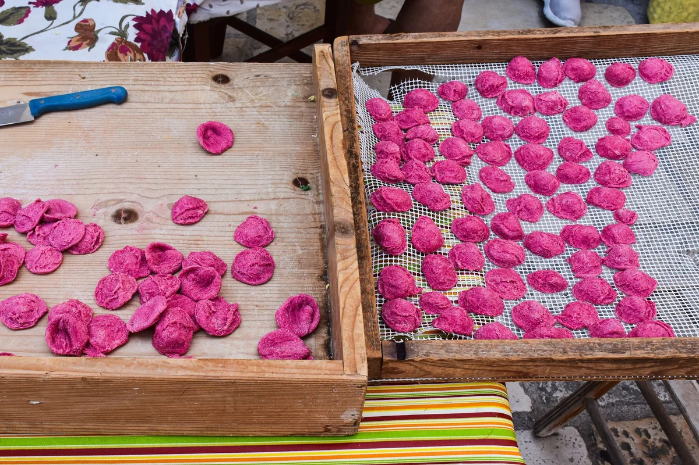
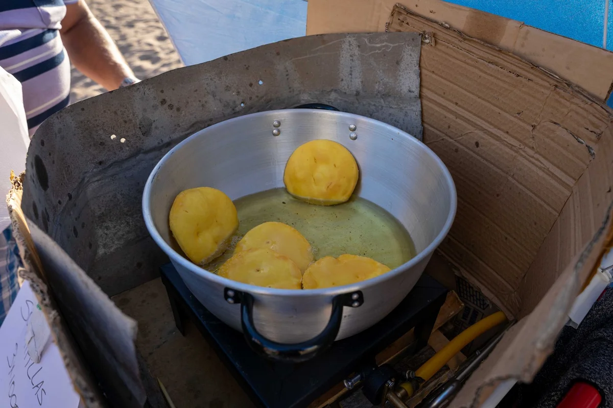

Introduction
If there is one place in Italy right now that food lovers are scrambling to visit before it becomes completely overrun, it is Bari Vecchia, the ancient walled quarter of the Apulian capital where a handful of women still sit outside their front doors every single morning, hand-rolling orecchiette on wooden boards worn smooth by decades of use. This Bari Vecchia local street food guide exists because the neighbourhood deserves more than a five-minute detour between a cruise-ship stop and a gelato. It deserves an entire day, an empty stomach, and a willingness to eat with your hands in a medieval alley.
The viral wave crested hard in 2024 when the pasta grandmothers of Arco Basso, the lane locally known as the Strada delle Orecchiette, were reportedly invited to demonstrate their craft at the Ambani pre-wedding celebrations in Jamnagar, India. Overnight, the street went from a beloved local curiosity to a globally trending topic. Tourist numbers in Bari Vecchia have surged, which makes knowing where exactly to go, when, and what to order beyond the obvious more important than ever.
But Bari Vecchia is not just one street. The neighbourhood is a dense, salt-aired labyrinth of whitewashed churches, fishermen's courtyards, and tiny friggitorie (fry shops) that have been feeding the city since long before any algorithm discovered them. Knowing the full picture is the difference between a tourist snapshot and an actual meal.
The Strada delle Orecchiette: What It Actually Is (and What It Is Not)
The address that has broken the internet is Arco Basso, a short residential lane running parallel to the seafront in the oldest part of Bari. Every morning, a rotating cast of local women set up small tables outside their ground-floor apartments and begin producing orecchiette, cavatelli, and strascinati entirely by hand, just as their mothers and grandmothers did before them.
Among the most recognisable figures is Nunzia Caputo, often referred to as the Lady of Orecchiette, who has appeared in documentaries and international food programmes dedicated to Bari's pasta-making tradition. She and her neighbours are not performing for the cameras, at least not originally. This was simply how pasta was made and sold in Puglia before industrial production arrived, and in this one corner of Bari it never stopped.
What the viral content rarely shows: these women are running a small informal business. The fresh pasta they roll is sold by weight, typically between 3 and 5 euros per 200 grams, and it travels extraordinarily well in a cool bag. Buying a bag to cook at home is not only acceptable, it is actively encouraged. What is not acceptable, and increasingly resented by residents, is pushing a camera into someone's face without asking. A smile and a "posso fare una foto?" (can I take a photo?) goes an enormous distance.
The lane is at its most atmospheric and least crowded before 9:30 in the morning. By 11:00 on any weekend between April and October, it can feel like a slow-moving queue rather than a living neighbourhood. Weekday mornings, particularly Tuesday through Thursday, remain the best window for a genuine encounter.
Sgagliozze, Panzerotti and the Fried Things You Need to Find
Orecchiette gets all the headlines, but the fried street food of Bari Vecchia is arguably more distinctive, harder to find elsewhere in Italy, and criminally underrepresented in travel content.
Sgagliozze are the dish to seek out first. These are thick slices of polenta, fried in oil until the outside is blistered and golden and the inside is soft and yielding, then salted immediately and eaten hot. They cost almost nothing (usually around 1 euro per piece) and are sold from tiny kiosks and open kitchen windows throughout the old town. The texture is somewhere between a fried gnocco and a proper chip, and they are addictive in a way that is difficult to explain until the first bite.
For panzerotti, the go-to address that locals actually use is Panificio Santa Rita on Via Chiurlia, a family bakery that produces fat, moon-shaped fried pockets filled with tomato and mozzarella. These are very different from the Milanese interpretation: the dough is thicker, the filling more concentrated, and they arrive in a paper bag that immediately becomes see-through with oil, which is exactly the correct outcome.
Focaccia barese also deserves its own mention, though strictly speaking it belongs to the broader Bari food culture rather than just the old town. The version sold warm from wood-fired ovens in Bari Vecchia, topped with local cherry tomatoes, olives, and a generous amount of olive oil, is noticeably different from any focaccia produced outside the region. The dough uses boiled potato, which gives it a density and moisture that commercial versions cannot replicate.
- Sgagliozze: around 1 euro per slice, from multiple vendors throughout Bari Vecchia
- Panzerotti at Panificio Santa Rita: approximately 2 to 3 euros each
- Focaccia barese: sold by the slice from 1.50 euros, best found near Piazza del Ferrarese

Raw Sea Urchin and the Pescatori Quarter: The Side of Bari Vecchia That Gets Skipped
Here is the angle that almost no travel article addresses: Bari Vecchia has an active fishing community whose relationship with food is entirely separate from the pasta lane tradition, and it produces one of the most singular eating experiences available anywhere on the Adriatic.
The area around the old port and the seafront below the Basilica of San Nicola is where local fishermen and their families gather in the early morning after boats return. It is entirely common, on any morning between October and March (the peak season), to find someone cracking open fresh ricci di mare (sea urchins) directly on the seawall and eating them with a small piece of bread, or selling small portions to passers-by for a euro or two.
This is not a tourist product. There is no sign, no menu, no Tripadvisor listing. It requires walking toward the water, being present, and occasionally asking. The urchins from this stretch of Adriatic are startlingly sweet and saline simultaneously, and eating them twenty minutes after they came out of the sea, on a salt-sprayed pier with the old town rising behind, is the kind of meal that tends to make everything else that day feel slightly inadequate by comparison.
For a more structured but still genuinely local seafood experience, Al Pescatore on Piazza Federico II di Svevia has been serving raw shellfish platters to Bari families for decades. It is not cheap (a crudo platter runs approximately 20 to 30 euros per person) but it is very far from a tourist trap.
A Practical Street-by-Street Route Through Bari Vecchia
Bari Vecchia is compact enough to cover on foot but dense enough to get lost in, which is part of the pleasure. The following sequence is designed for a half-day morning visit starting around 8:30 am, which threads together the best food stops before the crowds build.
- Start at Arco Basso (Strada delle Orecchiette) as early as possible. Watch the pasta being made, buy a portion to take home, and resist the urge to pull out your phone immediately. Spend at least fifteen minutes simply observing before doing anything else.
- Walk south toward the seafront via Via Venezia or any of the narrow perpendicular lanes. These streets are where you will find the sgagliozze vendors setting up around 9:00 am. Order two slices.
- Stop at Panificio Santa Rita on Via Chiurlia for a panzerotto. They typically come out of the oil from around 10:00 am onward. Eat it standing up outside.
- Follow the smell of the sea to the waterfront below the Castello Normanno-Svevo. Walk along the pier toward the old port. This is where the informal urchin moment may or may not happen depending on season and luck, and where the scale of the old town becomes visually apparent.
- End at Piazza del Ferrarese or the adjacent Lungomare Nazario Sauro with a slice of focaccia and a coffee from any of the bars lining the square. This is where the old town releases you back into the modern city.
Total walking distance: approximately 2 kilometres. Recommended budget for the full route: 10 to 15 euros per person, covering all food stops. Best months: October through April for smaller crowds and peak seafood season. May and September are manageable. July and August in Bari Vecchia require significant patience.

The One Thing Almost Every Visitor Gets Wrong About the Pasta Nonnas
This is the contrarian section that most guides on Bari Vecchia deliberately avoid because it complicates the romantic narrative.
The women of Arco Basso are not sitting outside making pasta because it is picturesque. They are doing it because it is an economic activity, and because the ventilation and space inside their small homes makes outdoor work more practical in the warmer months. The tradition predates tourism by several generations. What has changed is the audience, and with it, the dynamic.
In recent years, particularly since the Ambani connection accelerated international coverage in 2024, some residents of the street have reported feeling that their neighbourhood has become a living exhibit rather than a place where people actually live. Several women have reduced their hours or moved their tables further from the main pedestrian flow specifically to avoid the worst of the camera traffic.
The practical implication for visitors is this: the most respectful and, paradoxically, the most rewarding approach is to buy something. Purchasing a bag of fresh pasta opens a conversation in a way that simply photographing from a distance never will. Many of these women speak a bit of English, and all of them are deeply proud of what they produce. Asking about the difference between orecchiette and strascinati, or why one dough uses semolina and another uses flour, will get you a fifteen-minute demonstration and an education that no food tour can replicate.
The pasta will cost between 3 and 6 euros. The conversation it buys is invaluable.
Getting to Bari Vecchia and Practical Details
Bari is well connected by train via Trenitalia, with direct high-speed services from Naples (approximately 3 hours 20 minutes), Rome (approximately 4 hours), and frequent regional trains from Lecce (1 hour 20 minutes) and Brindisi (1 hour 10 minutes). Bari Karol Wojtyła Airport operates routes to most major European cities, including several low-cost connections from Barcelona, making it a realistic destination for a long weekend from Spain.
From Bari Centrale station, Bari Vecchia is a 15-minute walk directly toward the seafront, or a short bus ride on lines 2 or 3. There is no need for a taxi or car once inside the old town, as the entire quarter is pedestrianised.
Key practical notes:
- Most street food vendors in Bari Vecchia operate mornings only, typically 8:00 am to 1:00 pm. Arriving in the afternoon expecting full activity is the most common visitor mistake.
- Cash remains preferred at virtually all informal food vendors. Bring small notes.
- The Basilica of San Nicola (the spiritual heart of Bari Vecchia and the place where Saint Nicholas, the prototype for Santa Claus, is actually buried) is free to enter and worth thirty minutes of any visit.
- Parking in the old town itself is essentially impossible and entirely unnecessary. If arriving by car, use the paid parking areas around Piazza Aldo Moro and walk in.
Final Thoughts
Bari Vecchia is one of those rare places where the thing that went viral happens to be genuinely worth the journey, provided the visit is done with a little thought and a lot of appetite. The nonnas of Arco Basso are not a performance, the sgagliozze are not a novelty, and the sea urchins cracked open on the pier are not on any menu. They are simply how this corner of Puglia has fed itself for a very long time.
The surge of international attention since 2024 has made timing more important than ever, but it has not diminished what makes Bari Vecchia extraordinary. Come early, come curious, spend your money with the people actually making the food, and leave the neighbourhood looking and feeling exactly as you found it.
If this guide helped you plan a better visit to Bari Vecchia, or if you have eaten your way through Arco Basso and want to share the experience, pass this article along to anyone with a flight to Puglia and an empty stomach.
Frequently Asked Questions
What time do the pasta grandmothers work in Bari Vecchia?
The women of Arco Basso, the Strada delle Orecchiette, typically begin setting up between 8:00 and 9:00 in the morning and wind down by early afternoon, often around 1:00 pm. The best time to visit is before 9:30 am on a weekday, when crowds are thinner and genuine interaction is much more likely.
How much does fresh orecchiette cost on Strada delle Orecchiette in Bari?
Fresh hand-rolled orecchiette on Arco Basso typically costs between 3 and 5 euros per 200 grams, depending on the vendor and the pasta shape. It is sold raw and travels well in a cool bag. Buying a portion to take home is completely normal and welcomed.
What is sgagliozze and where can you find it in Bari Vecchia?
Sgagliozze are thick slices of fried polenta, salted immediately after cooking, and sold hot from small kiosks throughout Bari Vecchia. They cost around 1 euro per slice and are one of the most distinctive and underrated street foods in the entire city. Look for them in the lanes between Arco Basso and the waterfront, particularly from around 9:00 am onward.
Is Bari Vecchia worth visiting in summer?
Bari Vecchia is beautiful in summer but significantly more crowded, particularly in July and August when cruise ship traffic and domestic tourism peak simultaneously. For street food purposes, the best seasons are October through April, when the seafood is at its finest and the lanes are navigable at a human pace.
Can you eat sea urchin as street food in Bari?
Yes, though it is informal rather than organised. Between October and March, it is common to find fishermen and local vendors cracking open fresh sea urchins near the old port and selling small portions for around 1 to 2 euros, eaten with bread on the spot. This is entirely seasonal and location-dependent rather than a guaranteed stop, which is precisely what makes it memorable.
Why did the Bari pasta grandmothers become famous internationally?
The women of Arco Basso in Bari Vecchia have been making hand-rolled orecchiette outside their homes for generations, but international attention accelerated dramatically in 2024 when it was reported that pasta makers from the street were invited to demonstrate their craft at the Ambani pre-wedding celebrations in India. The resulting media coverage turned what was already a beloved food destination into a globally trending topic.